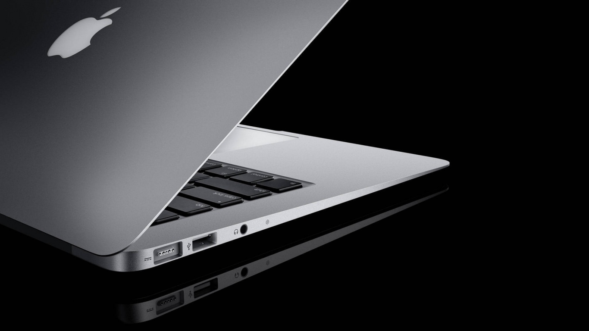

Original polycarbonate model [edit] First-generation black polycarbonate MacBook, 2006 The original MacBook, available in black or white colors, was released on June 28, 2006, and used the Intel Core Duo processor and 945GM chipset, with Intel's GMA 950 integrated graphics on a 667 MHz front side bus. Later revisions of the MacBook moved to the Core 2 Duo processor and the GM965 chipset, with Intel's GMA X3100 integrated graphics on an 800 MHz system bus.[9] Sales of the black polycarbonate MacBook ceased in October 2008, after the introduction of the aluminum MacBook. While thinner than its predecessor – the iBook G4 – the MacBook is wider than the 12-inch model due to its widescreen display. In addition, the MacBook was one of the first (the first being the MacBook Pro) to adopt Apple's MagSafe power connector and it replaced the iBook's mini-VGA display port with a mini-DVI display port. The iBook's discrete graphics chip was initially replaced by an integrated Intel GMA solution, though the latest revisions of the MacBook were upgraded with the more powerful Nvidia GeForce 9400M and later the 320M.[10] While the MacBook Pro largely followed the industrial design standard set by the PowerBook G4, the MacBook was Apple's first notebook to use features now standard in its notebooks – the glossy display, the sunken keyboard design and the non-mechanical magnetic latch. With the late 2007 revision, the keyboard received several changes to closely mirror the one which shipped with the iMac, by adding the same keyboard short-cut to control multimedia, and removing the embedded numeric keypad and the Apple logo from the command keys.[11] A more expensive black model was offered until the introduction of the unibody aluminum MacBook. The polycarbonate MacBook was the only Macintosh notebook (until the new 2015 model) to be offered in more than one color since the iBook G3 (Clamshell). Ports[edit] The ports are all on the left edge; on early models, from left to right, they are the MagSafe power connector, Gigabit Ethernet, mini-DVI, FireWire 400, 2 USB 2.0 ports, audio in, audio out and Kensington Security Slot. For the unibody polycarbonate MacBook (2009), the ports from left to right are the MagSafe power connector, Gigabit Ethernet, Mini DisplayPort, 2 USB 2.0 ports, audio out and Kensington Security Slot. On the front, there is a power light and an infrared receiver, while on the right edge, there is only the optical drive.  User serviceability[edit] The polycarbonate Intel MacBook is easier for users to fix or upgrade than its predecessor. Where the iBook required substantial disassembly to access internal components such as the hard drive, users only need to remove the battery and the RAM door to replace the MacBook drive. Apple provides do-it-yourself manuals for these tasks.[12] Quality problems[edit] In February 2007, the MacBook was recalled because the graphics card and hard drive caused the computer to overheat, forcing the unit to shut down.[citation needed] Some early polycarbonate MacBook models suffered from random shutdowns; Apple released a firmware update to resolve them.[13] There were also cases reported of discolored or chipping palmrests. In such cases, Apple asked affected owners to contact AppleCare.[14] There were problems with batteries on some models from 2007 not being read by the MacBook. This is caused by a logic board fault and not a fault with the battery.[citation needed] In February 2010, Apple announced a recall for MacBooks bought between 2006–2007 for hard drive issues. This is caused by heat and other problems.[citation needed] Model specifications[edit] Apple used the A1181 code, printed on the case, for this family of models, though 17 variations may be counted if color is included.[15] Camera iSight Camera (640 × 480 0.3 MP) Video out Mini DVI Latest possible OS X version OS X 10.6.8 "Snow Leopard" OS X 10.7.5 "Lion" OS X 10.11 "El Capitan" officially, macOS 10.12 "Sierra" unofficially with Sierra Patcher Battery 55-watt-hour removable lithium-polymer Weight 5.2 lb (2.4 kg) 5.1 lb (2.3 kg) 5.0 lb (2.3 kg) Dimensions 1.08 in × 12.78 in × 8.92 in (27.5 mm × 325 mm × 227 mm)